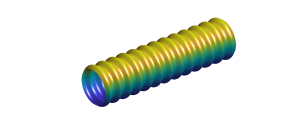
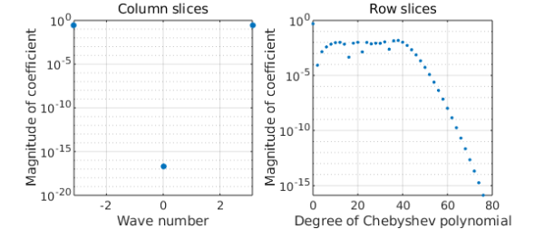
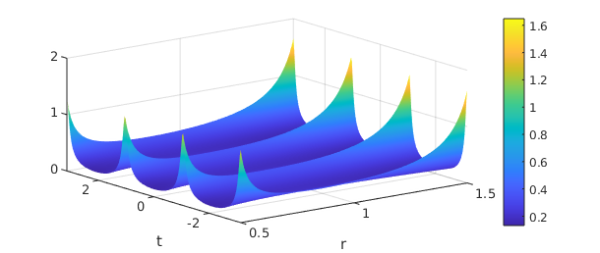
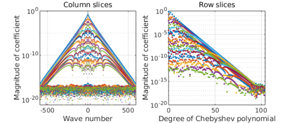

1. Hosepipe
Here is a surface you might find on your vacuum cleaner or under the hood of your car:
r = chebfun(@(x) .5+.04*cos(40*x)); F = chebfun2(@(x,phi) 2*x, 'trigy'); G = chebfun2(@(x,phi) r(x).*cos(pi*phi), 'trigy'); H = chebfun2(@(x,phi) r(x).*sin(pi*phi), 'trigy'); surf(F,G,H), axis equal off, camlight

Viewed as a surface, we see that this is periodic in the $\phi$ direction and nonperiodic in the $x$ direction. What's interesting is that its representation as a trio of chebfun2 objects shares this property: each of them is nonperiodic in the first variable and periodic in the second, because the flag 'trigy' has been specified.
Until recently, a chebfun2 representation had to be Chebyshev in both variables or, if 'trig' was specified, trigonometric in both directions. The ability to mix the two with 'trigx' or 'trigy' is new. Here we see some details of the three chebfun2 objects:
F, G, H
F =
chebfun2 object (trig in y)
domain rank corner values
[ -1, 1] x [ -1, 1] 1 [ -2 2 -2 2]
vertical scale = 2
G =
chebfun2 object (trig in y)
domain rank corner values
[ -1, 1] x [ -1, 1] 1 [-0.47 -0.47 -0.47 -0.47]
vertical scale = 0.54
H =
chebfun2 object (trig in y)
domain rank corner values
[ -1, 1] x [ -1, 1] 1 [-6.9e-17 -6.9e-17 4.7e-17 4.7e-17]
vertical scale = 0.53
The F chebfun2 is trivial, but G is interesting. The command plotcoeffs shows how it mixes different representations in the two directions. The H chebfun2 looks much the same.
plotcoeffs(G)

One reason for representing a periodic function periodically is that it is somewhat more efficient. More important in practice is that its derivatives may retain their smoothness and accuracy at the wraparound point.
2. Annulus
The hosepipe example is relatively complicated. A simpler illustration of the Cheb/trig combination is the discretization of a function defined in an annulus: periodic in the angular direction, nonperiodic in the radial direction. For example, the analytic function $f(z) = (1+4/z^3)^{-1} (z^3+0.1)^{-1}$ has three poles outside the unit disk and three inside. For $1/2 \le |z| \le 3/2$ it is analytic, however, so its abolute value $F(r,t) = |f(re^{i t})|$ is smooth:
f = @(z) (1+4./z.^3).^-1.*(z.^3+.1).^-1; F = @(r,t) abs(f(r.*exp(1i*t)));
Here we make a cheb/trig chebfun2 of $F$:
Fc = chebfun2(@(r,t) F(r,t),[.5 1.5 -pi pi],'trigy');
clf, plot(Fc), colorbar xlabel r, ylabel t

(I am not sure if Chebfun offers an elegant way to plot this in an annulus.) Here are the Chebyshev and Fourier expansion coefficients:
plotcoeffs(Fc)
